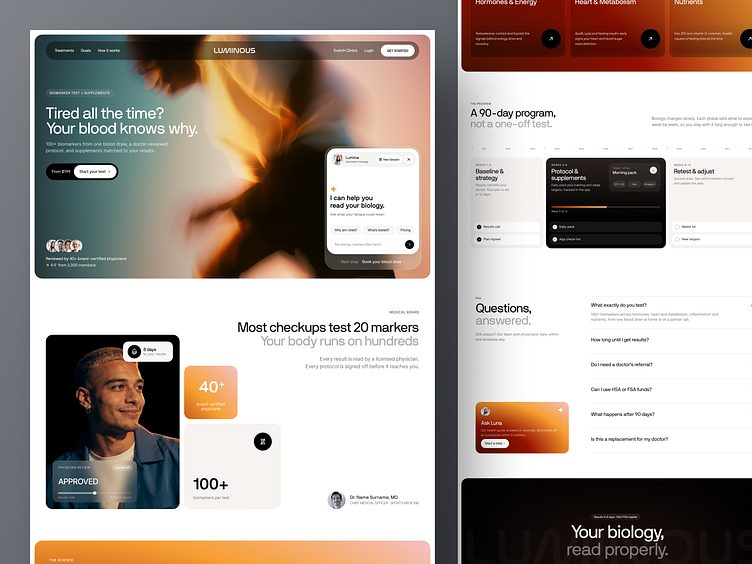

Luminous — Blood Testing & Health Program Landing Page
by Tosan Garditama
SaaSSaaS
血液检测与健康计划着陆页 Luminous：柔和的浅色底上，检测流程、健康数据与订阅方案层层展开，插画与留白透着医疗的安心感；健康品牌用“一条检测流程 + 一组健康数据”把验血这件事讲得轻松可信。Luminous, a blood testing and health program landing page: on a soft light background, the testing flow, health data and subscription plans unfold layer by layer, with illustrations and whitespace that feel reassuringly clinical; one testing flow and one set of health data make blood testing feel easy and credible.